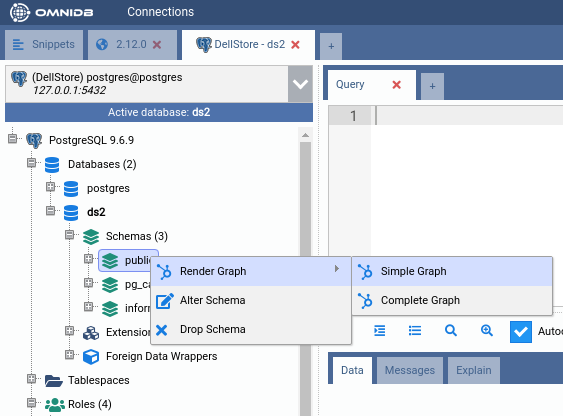
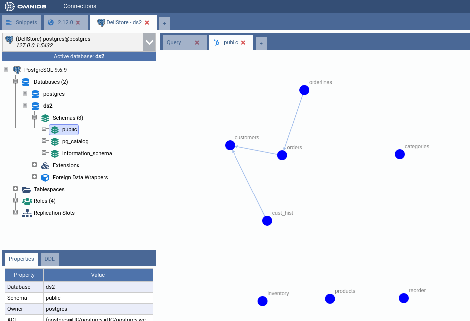
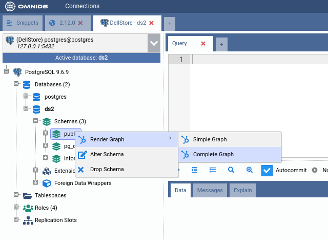
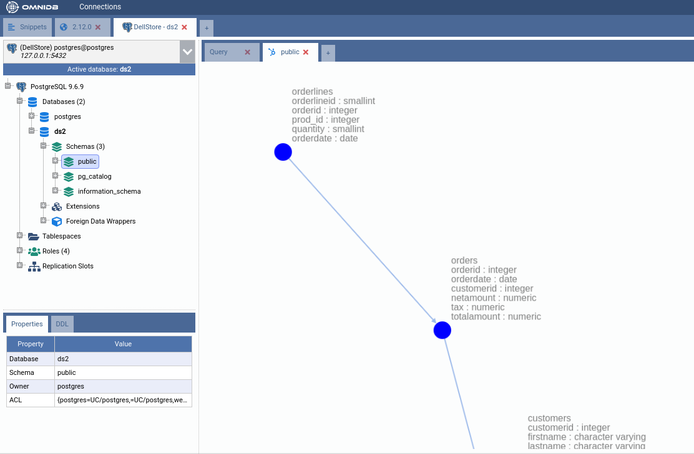

9. Visualizing Data
This feature displays a graph with nodes representing tables and edges representing table relationships with foreign keys. Using the mouse, the user is able to zoom in, zoom out, and drag and drop nodes to change its position.
There are two types of graphs: Simple Graph and Complete Graph.
Simple graph
This one display simple table nodes and their relationships. To access it just right click the schema node you want in the tree and then select the action Render Graph > Simple Graph:


Complete graph
This graph displays tables with all its columns and respective data types. To access it just right click the schema you want in the tree and then select the action Render Graph > Complete Graph:

